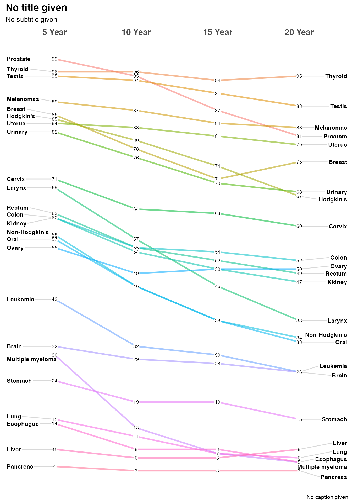
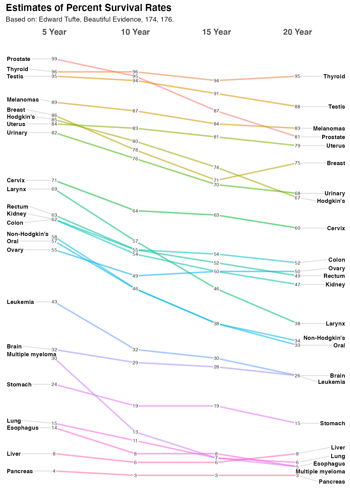
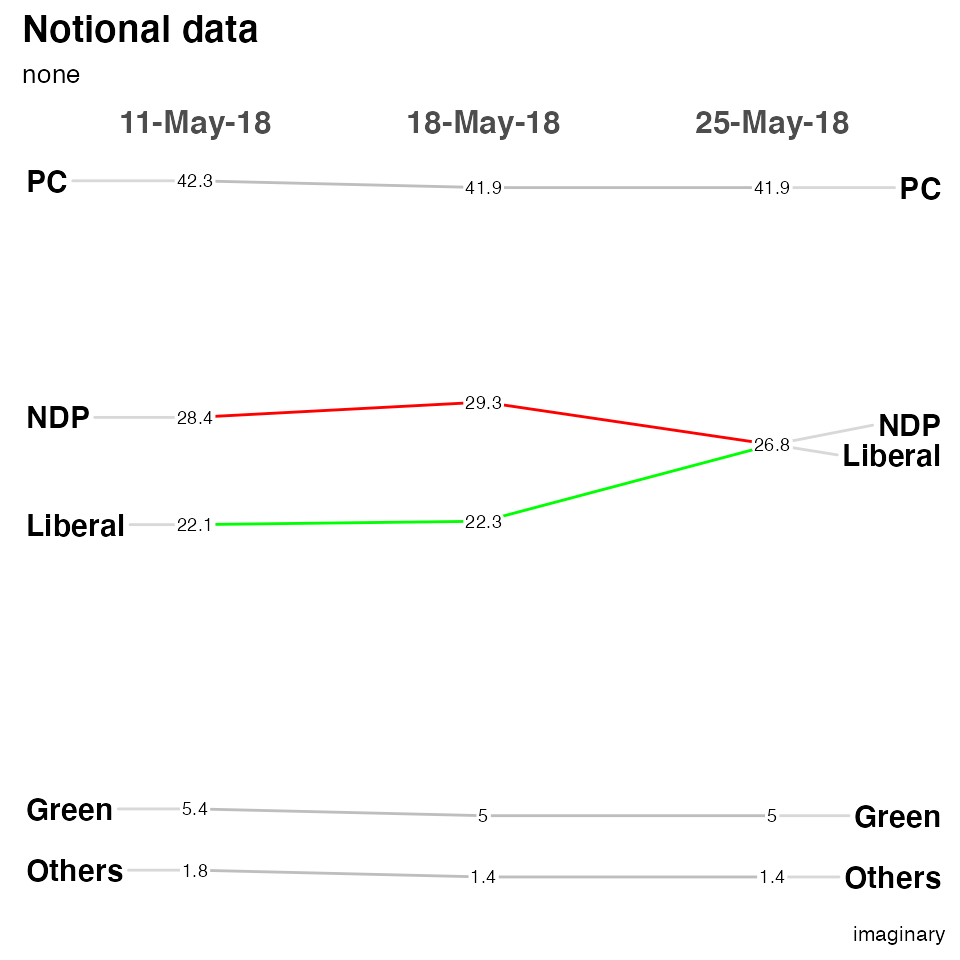

Using newggslopegraph
Chuck Powell
2020-07-30
Source:vignettes/Using-newggslopegraph.Rmd
Using-newggslopegraph.RmdThis function is designed to automate the process of producing a Tufte style slopegraph using ggplot2.
I’ve been aware of slopegraphs and bumpcharts for quite some time, and I certainly am aware of Tufte’s work. As an amateur military historian I’ve always loved, for example, his poster depicting Napoleon’s Russian Campaign. So when I saw the article from Murtaza Haider titled “Edward Tufte’s Slopegraphs and political fortunes in Ontario” I just had to take a shot at writing a function.
To make it a little easier to get started with the function I have taken the liberty of providing the cancer data in a format where it is immediately usable. Please see ?newcancer.
Installation and setup
Long term I’ll try and ensure the version on CRAN is well maintained but for now you’re better served by grabbing the current version from GITHUB.
knitr::opts_chunk$set( collapse = TRUE, comment = "#>" ) # Install from CRAN # install.packages("CGPfunctions") # Or the development version from GitHub # install.packages("devtools") # devtools::install_github("ibecav/CGPfunctions") library(CGPfunctions) library(tidyr) library(dplyr)
##
## Attaching package: 'dplyr'## The following objects are masked from 'package:stats':
##
## filter, lag## The following objects are masked from 'package:base':
##
## intersect, setdiff, setequal, unionSimple examples
If you’re unfamiliar with slopegraphs or just want to see what the display is all about the dataset I’ve provided can get you started in one line
newggslopegraph(newcancer,Year,Survival,Type)

Optionally you can provide important label information through Title, Subtitle, and Caption arguments. You can suppress them all together by setting them = NULL but since I think they are very important the default is to gently remind you, that you have not provided any information. Let’s provide a title and sub-title but skip the caption.
newggslopegraph(dataframe = newcancer, Times = Year, Measurement = Survival, Grouping = Type, Title = "Estimates of Percent Survival Rates", SubTitle = "Based on: Edward Tufte, Beautiful Evidence, 174, 176.", Caption = NULL )

How it all works
It’s all well and good to get the little demo to work, but it might be useful for you to understand how to extend it out to data you’re interested in.
You’ll need a dataframe with at least three columns. The function will do some basic error checking and complain if you don’t hit the essentials.
-
Timesis the column in the dataframe that corresponds to the x axis of the plot and is normally a set of moments in time expressed as either characters, factors or ordered factors (in our casenewcancer$Year. If it is truly time series data (especially with a lot of dates you’re much better off using an R function purpose built for that). Innewcancerit’s an ordered factor, mainly because if we fed the information in as character the sort order would beYear 10, Year 15, Year 20, Year 5which is very suboptimal. A command likenewcancer$Year <- factor(newcancer$Year,levels = c("Year.5", "Year.10", "Year.15", "Year.20"), labels = c("5 Year","10 Year","15 Year","20 Year"), ordered = TRUE)would be the way to force things they way you want them. -
Measurementis the column that has the actual numbers you want to display along the y axis. Frequently that’s a percentage but it could just as easily be any number. Watch out for scaling issues here you’ll want to ensure that its not disparate. In our casenewcancer$Survivalis the percentage of patients surviving at that point in time, so the maximum scale is 0 to 100. -
Groupingis what controls how many individual lines are portrayed. Every attempt is made to color them and label them in ways that lead to clarity but eventually you can have too many. In our example case the column isnewcancer$Typefor the type of cancer or location.
Another quick example
This is loosely based off a blog post from Murtaza Haider titled “Edward Tufte’s Slopegraphs and political fortunes in Ontario” that led to my developing this function chronicled here.
In this case we’re going to plot the percent of the vote captured by some Canadian political parties.
The data is loosely based on real data but is not actually accurate.
moredata$Date is the hypothetical polling date as a factor (in this case character would work equally well). moredata$Party is the various political parties and moredata$Pct is the percentage of the vote they are estimated to have.
moredata <- structure(list(Date = structure(c(1L, 1L, 1L, 1L, 1L, 2L, 2L, 2L, 2L, 2L, 3L, 3L, 3L, 3L, 3L), .Label = c("11-May-18", "18-May-18", "25-May-18"), class = "factor"), Party = structure(c(5L, 3L, 2L, 1L, 4L, 5L, 3L, 2L, 1L, 4L, 5L, 3L, 2L, 1L, 4L), .Label = c("Green", "Liberal", "NDP", "Others", "PC"), class = "factor"), Pct = c(42.3, 28.4, 22.1, 5.4, 1.8, 41.9, 29.3, 22.3, 5, 1.4, 41.9, 26.8, 26.8, 5, 1.4)), class = "data.frame", row.names = c(NA, -15L)) #tail(moredata) newggslopegraph(moredata,Date,Pct,Party, Title = "Notional data", SubTitle = NULL, Caption = NULL) #> #> Converting 'Date' to an ordered factor

There are a plethora of formatting options. See ?newggslopegraph for all of them. Here’s a few.
newggslopegraph(moredata, Date, Pct, Party, Title = "Notional data", SubTitle = "none", Caption = "imaginary", LineColor = "gray", LineThickness = .5, YTextSize = 4 ) #> #> Converting 'Date' to an ordered factor

The most complex is LineColor where you can do the following if you want to highlight the difference between the Liberal and NDP parties while making the other three less prominent…
newggslopegraph(moredata, Date, Pct, Party, Title = "Notional data", SubTitle = "none", Caption = "imaginary", LineColor = c("Green" = "gray", "Liberal" = "green", "NDP" = "red", "Others" = "gray", "PC" = "gray"), LineThickness = .5, YTextSize = 4 ) #> #> Converting 'Date' to an ordered factor

Slopegraph Best Practices
- Scaling – this function plots to scale on an actual scale.
- If the datapoints or labels are bunching up, expand the vertical size of the plot as necessary.
- Names of the items on both the left-hand and right-hand axes are aligned, to make vertical scanning of the items’ names easier.
- Many suggest using a thin, light gray line to connect the data. A too-heavy line is unnecessary and will make the chart harder to read.
- When a chart features many slope intersections, judicious use of color can avoid what Ben Fry describes as the “pile of sticks” phenomenon (Visualizing Data, 121).
- A table (with more statistical detail) might be a good complement to use alongside the slopegraph. As Tufte notes: “The data table and the slopegraph are colleagues in explanation not competitors. One display can serve some but not all functions.”
One last set of data
Also from Tufte, this is data about a select group of countries Gross Domestic Product (GDP). I’ll use it to show you a tricky way to highlight certain countries without making a named vector with LineColor = c(rep("gray",3), "red", rep("gray",3), "red", rep("gray",10)) the excess vector entries are silently dropped… The bottom line is that LineColor is simply a character vector that you can fill any way you choose.
newggslopegraph(newgdp, Year, GDP, Country, Title = "Gross GDP", SubTitle = NULL, Caption = NULL, LineThickness = .5, YTextSize = 4, LineColor = c(rep("gray",3), "red", rep("gray",3), "red", rep("gray",10)) )
Finally, let me take a moment about crowding and labeling. I’ve made every effort to try and deconflict the labels on the left and right axis (in this example the Country) and that should work automatically as you resize your plot dimensions. ** pro tip - if you use RStudio you can press the zoom icon and then use the rescaling of the window to see best choices **.
But the numbers (GDP) are a different matter and there’s no easy way to ensure separation in a case like this data. There’s a decent total spread from 57.4 to 20.7 and some really close measurements like France, Belgium, and Germany on the right side. My suggestion is in a case like this one you create a new column in your dataframe with two significant places. So specifically it would be newgdp$rGDP <- signif(newgdp$GDP, 2). In my testing, at least, I’ve found this helps without creating inaccuracy and not causing you to try and “stretch” vertically to disambiguate the numbers. This time I’ll also use LineColor to highlight how Canada, Finland and Belgium fare from 1970 to 1979.
Then to demonstrate how flexible LineColor really is I’ll use some tidyverse tools to build a named list of countries and colors. The country’s line color will be determined by whether the difference between 1979 is positive, near neutral or negative.
newgdp$rGDP <- signif(newgdp$GDP, 2) newggslopegraph(newgdp, Year, rGDP, Country, Title = "Gross GDP", SubTitle = NULL, Caption = NULL, LineThickness = .5, YTextSize = 4, LineColor = c(rep("gray",6), rep("red",2), "red", rep("gray",10)) )

custom_colors <- tidyr::pivot_wider(newgdp, id_cols = Country, names_from = Year, values_from = GDP) %>% mutate(difference = Year1979 - Year1970) %>% mutate(trend = case_when( difference >= 2 ~ "green", difference <= -1 ~ "red", TRUE ~ "gray" ) ) %>% select(Country, trend) %>% tibble::deframe() custom_colors #> Sweden Netherlands Norway Britain France Germany #> "green" "green" "green" "red" "green" "green" #> Belgium Canada Finland Italy US Greece #> "green" "gray" "green" "green" "green" "green" #> Switzerland Spain Japan #> "green" "green" "green" newggslopegraph(newgdp, Year, rGDP, Country, Title = "Gross GDP", SubTitle = NULL, Caption = NULL, LineThickness = .5, YTextSize = 4, LineColor = custom_colors )

Leaving Feedback
If you like CGPfunctions, please consider Filing a GitHub issue by leaving feedback here, or by contacting me at ibecav at gmail.com by email.
License

This work is licensed under a Creative Commons Attribution-ShareAlike 4.0 International License.